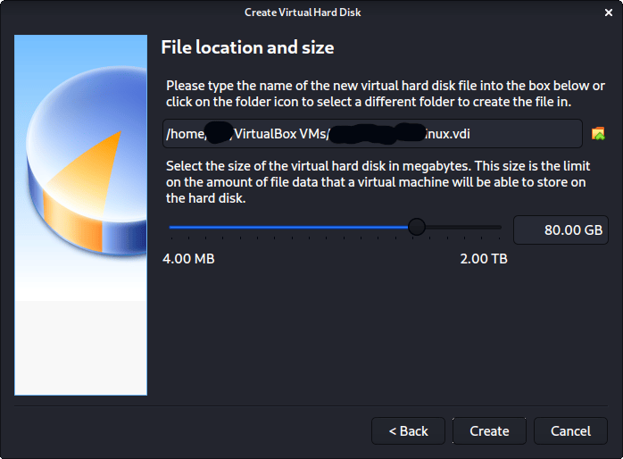
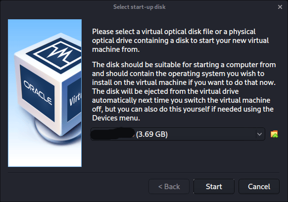

Chapter 2.1.1: VirtualBox
Wizard
Upon starting up VirtualBox, select “New” (Machine -> New).

The next screen is “Name and operating system” which is where you name the VM. This name is also used in any filenames (such as the configuration, hard disk and snapshot - which isn’t changed from this point). For the “Type”, we set it as Linux. For the “Version”, we are going to be using the x64 desktop image, so we are going to select Debian (64-bit).

“Memory size” is the next section, where we can define how much RAM to use. Again, the higher the amount of RAM, the more applications can be open and at increased performance. Various tools inside of Denios can be demanding of resources. When we make the general VMs, we select 2048 MB (2GB) for RAM, but we often increase this for our personal machines as we have high-performing devices with spare RAM which Denios can utilize.

This screen below, “Hard disk”, allows us to Create a new virtual disk now.

For the “Hard disk file type”, we select VDI (VirtualBox Disk Image) (and its the default option).

For the following screen, “Storage on physical hard disk”, we go with the default option of Dynamically allocated.

Now with “File location and size”, we can now define how large the virtual hard disk will be. We use 80.00 GB for our VMs.
After clicking on “Create”, the wizard is complete. Now we click on “Settings”, to customize the VM further.

In “General” -> “Advanced”, we make sure to set “Shared Clipboard” to bidirectional, as well as “Drag’n’Drop” to bidirectional

In “System” -> “Motherboard”, we change the “Boot Order” to make sure Hard Disk is top and Optical is the second. Everything else is disabled.

In “System” -> “Processor”, we increase the “Processor(s)” to be 2. At the same time, we also enable “Extended Features” for Enable PAE/NX.

In “Display” -> “Screen”, we make sure to have “Video Memory” set to 128 MB Another item to point out is to make sure that “Accelerated 3D graphics” is disabled, as people have reported that causes issues.

The final settings view looks like the following:

When we are ready to go, press “Start”. The first time we run it, we will get a prompt saying do we wish to mount an image to use as a “start-up disk”. We want to use our Denios image, rather than a physical drive, so we select the icon to the side of the drop down.

A new pop up will open, “Optical Disk Selector”. We will now press “Add”, then navigate to where our ISO is located.

After pressing “Open”, we can see its been added, so we make sure its selected and press “Choose”.

All that is left now to do is press “Start”.
During Denios Linux setup process, the install wizard should detect if its inside a VM. If it is, should then automatically install any additional tools (such as virtualbox-guest-x11) to give a better user experience. If you want to manually re-install it, you can see our VirtualBox Guest Guide.